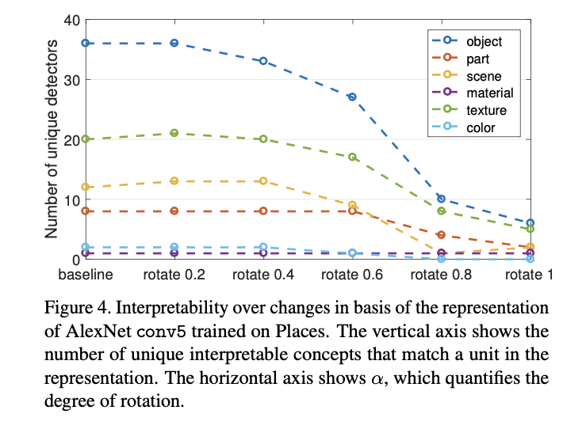
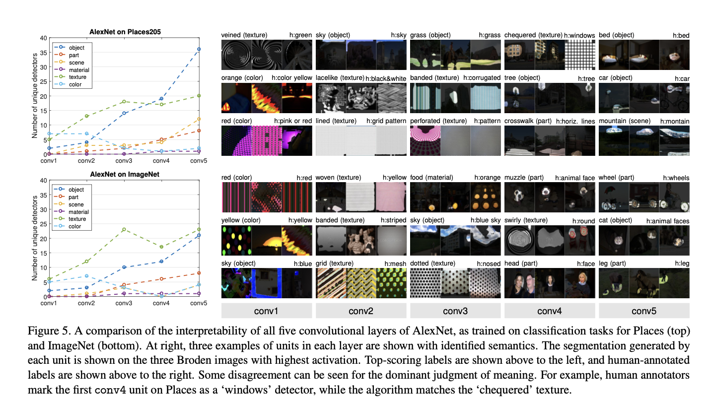
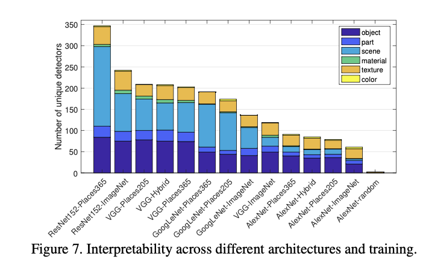
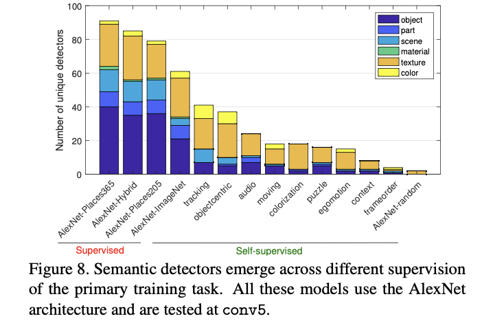
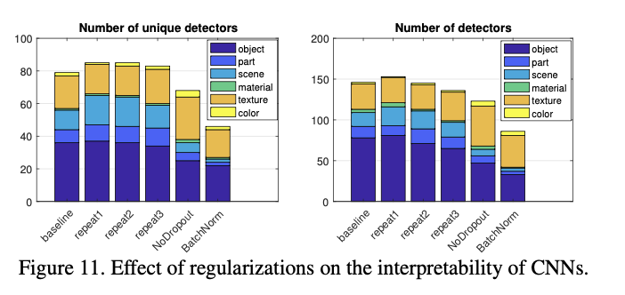
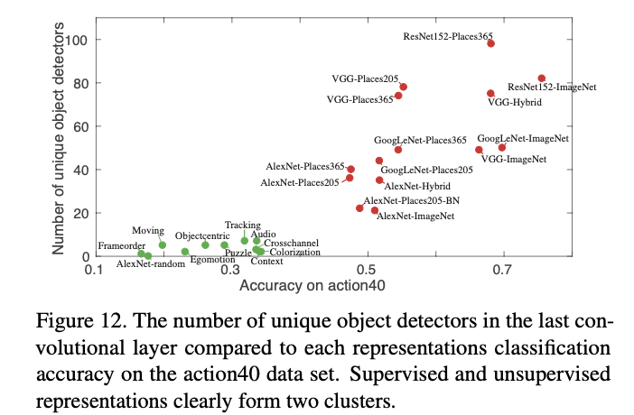
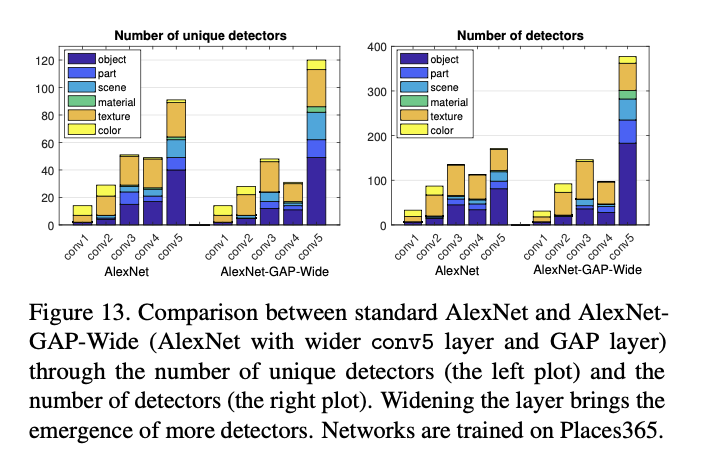

Network Dissection Quantifying Interpretability of Deep Visual Representions
-
David Bau∗, Bolei Zhou∗, Aditya Khosla, Aude Oliva, and Antonio Torralba
-
Quantifying the interpretability of latent representations of CNNs by evaluating the alignment between individual hidden units and a set of semantic concepts
-
score the semantics of hidden units at each intermediate convolutional layer.
-
The units with semantics are given labels across a range of objects, parts, scenes, textures, materials, and colors.
-
interpretability of units is equivalent to random linear combinations of units
-
analyze the effect of training iterations, compare networks trained with different initializations, examine the impact of network depth and width, and measure the effect of Dropout and batch normalization on the interpretability of deep visual representations
Introduction
- The emergence of interpretable structure suggests that deep networks may be learning disentangled representations spontaneously.
- A disentangled representation aligns its variables with a meaningful factorization of the underlying problem structure
- Broden
Network Dissection
- Our measurement of interpretability for deep visual representations proceeds in three steps: 1. Identify a broad set of human-labeled visual concepts. 2. Gather hidden variables’ response to known concepts. 3. Quantify alignment of hidden variableconcept pairs.
- In a fully interpretable local coding such as a one-hotencoding, each variable will match exactly with one humaninterpretable concept.
- Therefore we measure the alignment between single units and single interpretable concepts
- This does not gauge the discriminative power of the representation; rather it quantifies its disentangled interpretability.
- We then measure the alignment of each hidden unit of the CNN with each concept by evaluating the feature activation of each individual unit as a segmentation model for each concept
- To quantify the interpretability of a layer as a whole, we count the number of distinct visual concepts that are aligned with a unit in the layer
- Broden
Scoring Unit Interpretability
- evaluates every individual convolutional unit in a CNN as a solution to a binary segmentation task to every visual concept in Broden
- applied to any CNN using a forward pass without the need for training or backpropagation.
- For every input image x in the Broden dataset, the activation map of every internal convolutional unit k is collected.
- Then the distribution of individual unit activations ak is computed
- For each unit k, the top quantile level is determined such that over every spatial location of the activation map in the data set.
- input-resolution annotation mask for some concept c
- the activation map is scaled up to the mask resolution from using bilinear interpolation, anchoring interpolants at the center of each unit’s receptive field
- is then thresholded into a binary segmentation: , selecting all regions for which the activation exceeds the threshold Tk. These segmentations are evaluated against every concept c in the data set by computing intersections , for every (k, c) pair.
- The score of each unit k as segmentation for concept c is reported as a data-set-wide intersection over union score
- where | · | is the cardinality of a set.
- The value of is the accuracy of unit k in detecting concept c; we consider one unit k as a detector for concept c if IoUk,c exceeds a threshold
- Our qualitative results are insensitive to the IoU threshold: different thresholds denote different numbers of units as concept detectors
- For our comparisons we report a detector if IoUk,c > 0.04.
- one unit might be the detector for multiple concepts; for the purpose of our analysis, we choose the top ranked label
- The IoU evaluating the quality of the segmentation of a unit is an objective confidence score for interpretability that is comparable across networks
- Note that network dissection works only as well as the underlying data set
- We conclude that interpretability is neither an inevitable result of discriminative power, nor is it a prerequisite to discriminative power.
- Instead, we find that interpretability is a different quality that must be measured separately to be understood.
Measure of Axis Aligned Interpretability
- 
- 
Disentangled Concepts by Layer
- Confirming intuition, color and texture concepts dominate at lower layers conv1 and conv2 while more object and part detectors emerge in conv5.
Network Architectures and Supervisions
- In terms of network architecture, we find that interpretability of ResNet > VGG > GoogLeNet > AlexNet
- Deeper architectures appear to allow greater interpretability. Places > ImageNet.
- Self-supervised models create many texture detectors but relatively few object detectors; apparently, supervision from a self-taught primary task is much weaker at inferring interpretable concepts than supervised training on a large annotated data set
- The form of self-supervision makes a difference: for example, the colorization model is trained on colorless images, and almost no color detection units emerge
- We hypothesize that emergent units represent concepts required to solve the primary task.
Training Conditions Vs. Interpretability
- We can see that object detectors and part detectors begin emerging at about 10,000 iterations (each iteration processes a batch of 256 images)
- We do not find evidence of transitions across different concept categories during training
- For example, units in conv5 do not turn into texture or material detectors before becoming object or part detectors.
- Comparing different random initializations, the models converge to similar levels of interpretability, both in terms of the unique detector number and the total detector number; this matches observations of convergent learning
- For the network without Dropout, more texture detectors emerge but fewer object detectors
- Batch normalization seems to decrease interpretability significantly.
- The batch normalization result serves as a caution that discriminative power is not the only property of a representation that should be measured.
- batch normalization ‘whitens’ the activation at each layer, which smooths out scaling issues and allows a network to easily rotate axes of intermediate representations during training
- While whitening apparently speeds training, it may also have an effect similar to random rotations analyzed in Sec. 3.2 which destroy interpretability
- interpretability is neither a prerequisite nor an obstacle to discriminative power
- 
- 
- 
Discrimination Vs. Interpretability
- For each trained model, we extract the representation at the highest convolutional layer, and train a linear SVM with C = 0.001 on the training data for action40 action recognition task
- Thus the supervision tasks that encourage the emergence of more concept detectors may also improve the discrimination ability of deep features.
- accuracy on a representation when applied to a task is dependent not only on the number of concept detectors in the representation, but on the suitability of the set of represented concepts to the transfer task.
- 
Layer Width Vs. Interpretability
- Depth has been shown to be important to high discrimination ability
- increasing the number of convolutional units at a layer significantly increases computational cost while yielding only marginal improvements in classification accuracy
- carefully designed wide residual network can achieve classification accuracy superior to the commonly used thin and deep counterparts.
- This may indicate a limit on the capacity of AlexNet to separate explanatory factors; or it may indicate that a limit on the number of disentangled concepts that are helpful to solve the primary task of scene classification.
- 